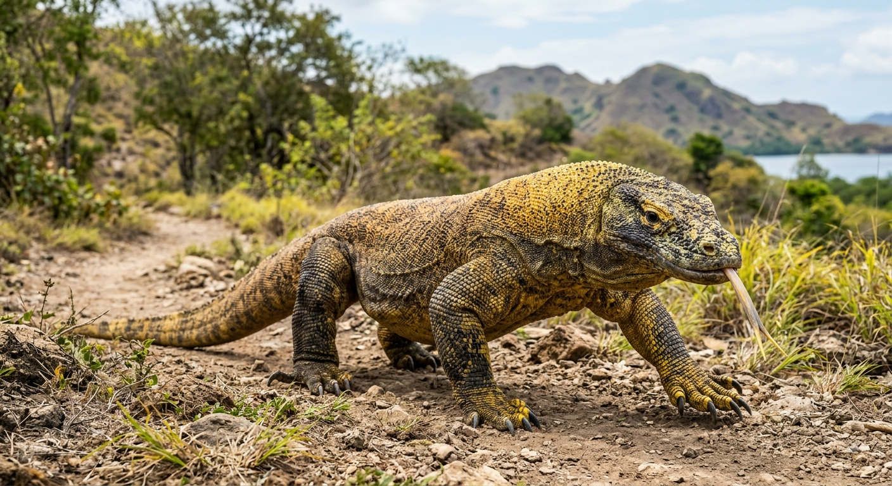

CURIOSIDADES INFORMATIVAS
Ola seres humanos, sejam bem vindos ao maior centro de curiosidades sobre os dragoes!
por: Gabriel Roncari
VOCE AI!, ESTA CURIOSO PARA SABER SOBRE OS MELHORES ANIMAIS DO MUNDO!!!

Ola seres humanos, sejam bem vindos ao maior centro de curiosidades sobre os dragoes!
por: Gabriel Roncari